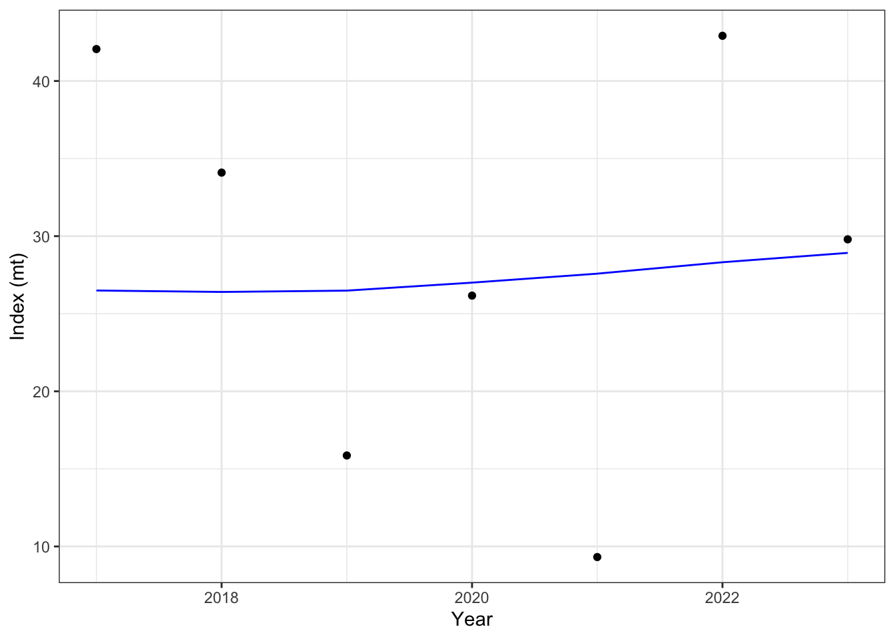
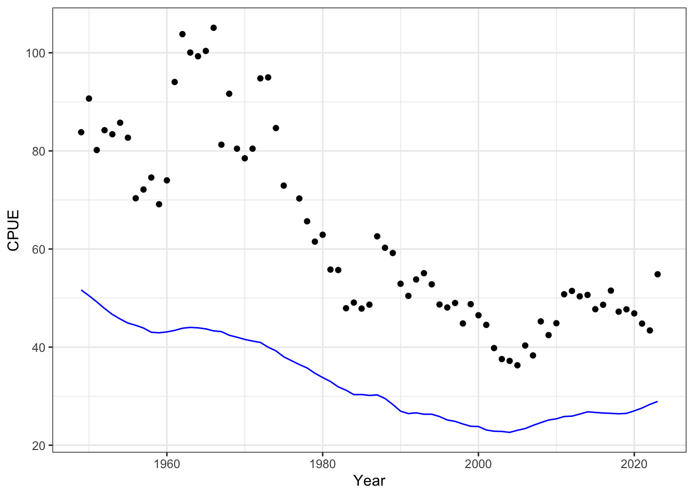
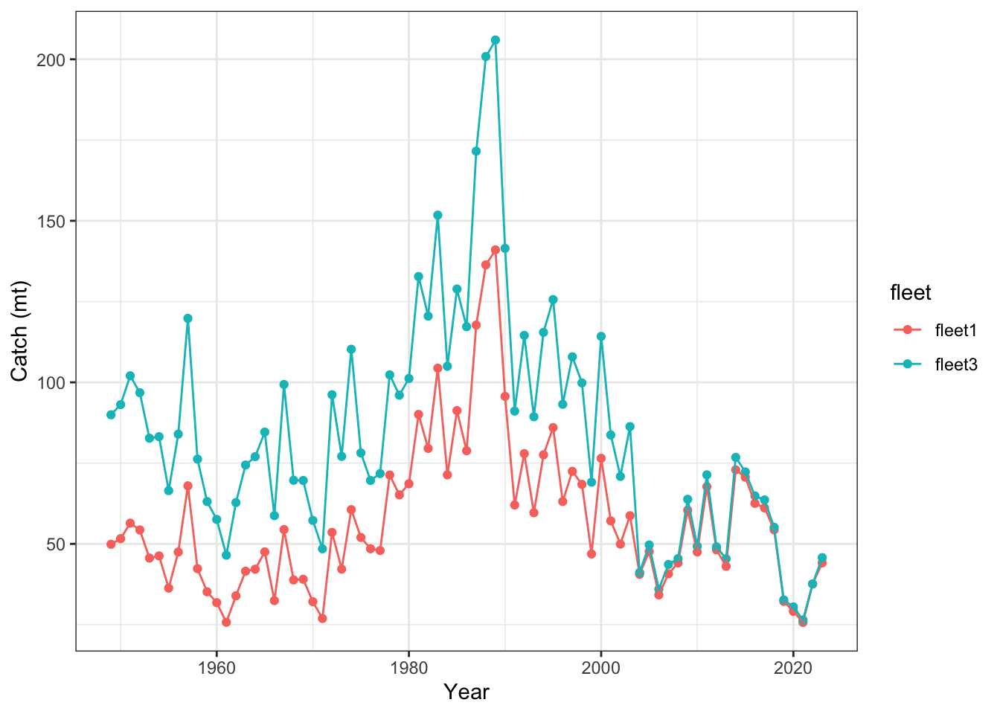
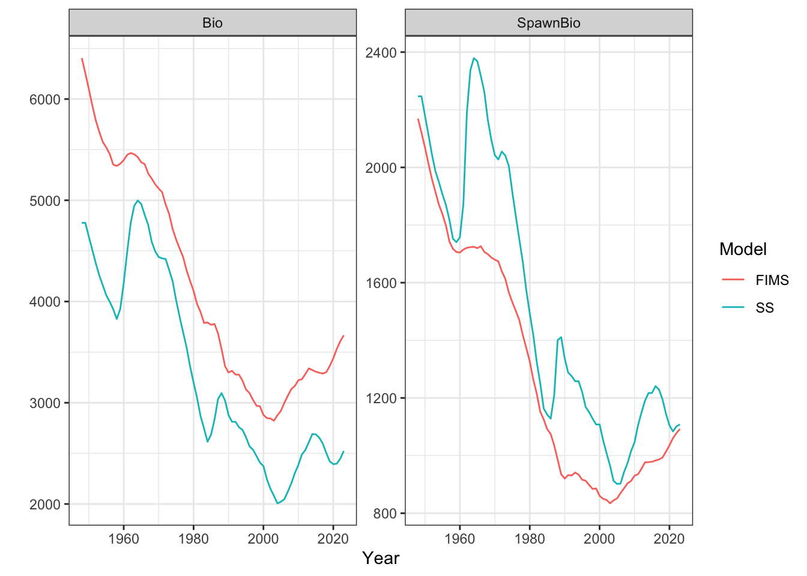
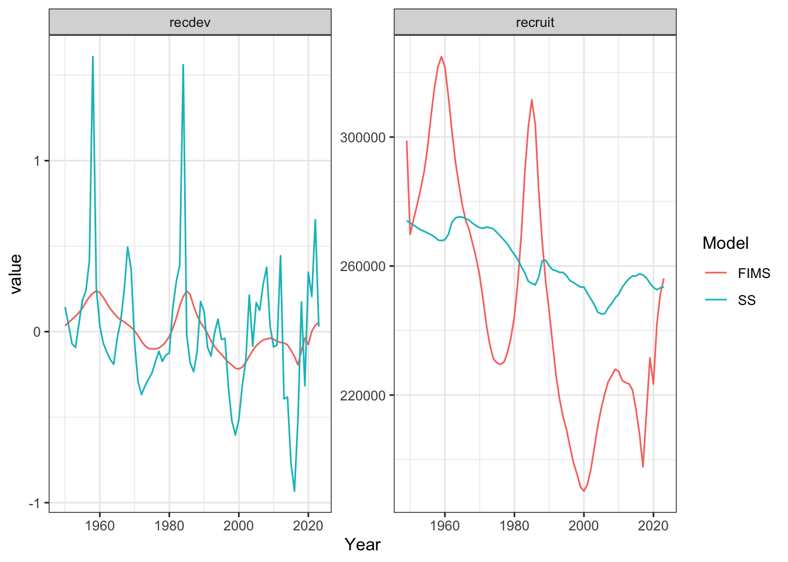

# Names of required packages
packages <- c("dplyr", "tidyr", "ggplot2", "TMB", "reshape2", "here", "remotes", "lubridate")
# Install packages not yet installed
installed_packages <- packages %in% rownames(installed.packages())
if (any(installed_packages == FALSE)) {
install.packages(packages[!installed_packages], repos = "http://cran.us.r-project.org")
}
remotes::install_github("NOAA-FIMS/FIMS")
remotes::install_github("r4ss/r4ss")
# Load packages
invisible(lapply(packages, library, character.only = TRUE))
library(FIMS)
R_version <- version$version.string
TMB_version <- packageDescription("TMB")$Version
FIMS_commit <- substr(packageDescription("FIMS")$GithubSHA1, 1, 7)
source(file.path("R", "utils.R"))Opakapaka Case Study
#remotes::install_github("NOAA-FIMS/FIMS", ref = "main")
library(r4ss)
# clear memory
clear()The setup
- R version =
R_version - TMB version =
TMB_version - FIMS commit =
FIMS_commit r4ssversion =r4ss_version
- Stock name: Main Hawaiian Islands Opakapaka
- Region: Pacific Islands
- Analyst: Meg Oshima
Setting up Data
load(file.path("data_files", "opaka_model.RDS"))
include_age_comps <- FALSE
include_length_comps <- TRUE
years <- seq(opaka_dat$styr, opaka_dat$endyr)
nyears <- length(years) # the number of years which we have data for.
nseasons <- 1 # the number of seasons in each year. FIMS currently defaults to 1
ages <- seq(1, 21) # age vector.
nages <- length(ages) # the number of age groups.
if(include_length_comps){
comp_lengths <- opaka_dat$lbin_vector # length vector.
nlengths <- length(comp_lengths) # the number of length bins.
}Preparing Data using FIMSFrame
We will be reading data into the model using the FIMSFrame S4 R class set up in R/fimsframe.R
# use FIMS data frame
source(here::here("content", "R", "get_ss3_data.R"))
opaka_dat_fims <- get_ss3_data(opaka_dat, fleets = c(1,2,3), ages = ages, lengths = comp_lengths)
if (!include_age_comps){
opaka_dat_fims <- opaka_dat_fims |>
dplyr::filter(type != "age")
}
## age to length conversion matrix
# Growth function values to create age to length conversion matrix from model
#comparison project
mg_pars <- rep$parameters |>
dplyr::filter(stringr::str_detect(Label, "_GP_"))
Linf <- mg_pars$Value[3]
K <- mg_pars$Value[4]
a0 <- -0.29
amax <- 21
cv <- mg_pars$Value[5]
L2Wa <- mg_pars$Value[7]
L2Wb <- mg_pars$Value[8]
AtoL <- function(a,Linf,K,a_0){
L <- Linf*(1-exp(-K*(a-a_0)))
}
ages <- 1:amax
len_bins <- comp_lengths
#Create length at age conversion matrix and fill proportions using above
#growth parameters
length_age_conversion <- matrix(NA,nrow=length(ages),ncol=length(len_bins))
for(i in seq_along(ages)){
#Calculate mean length at age to spread lengths around
mean_length <- AtoL(ages[i],Linf,K,a0)
#mean_length <- AtoLSchnute(ages[i],L1,L2,a1,a2,Ks)
#Calculate the cumulative proportion shorter than each composition length
temp_len_probs<-pnorm(q=len_bins,mean=mean_length,sd=mean_length*cv)
#Reset the first length proportion to zero so the first bin includes all
#density smaller than that bin
temp_len_probs[1]<-0
#subtract the offset length probabilities to calculate the proportion in each
#bin. For each length bin the proportion is how many fish are larger than this
#length but shorter than the next bin length.
temp_len_probs <- c(temp_len_probs[-1],1)-temp_len_probs
length_age_conversion[i,] <- temp_len_probs
}
colnames(length_age_conversion) <- len_bins
rownames(length_age_conversion) <- ages
#Extract years and fleets from milestone 1 data
start_date <- unique(opaka_dat_fims$datestart[opaka_dat_fims$type=="landings"])
end_date <- unique(opaka_dat_fims$dateend[opaka_dat_fims$type=="landings"])
observers <- unique(opaka_dat_fims$name[opaka_dat_fims$type=="length"])
#Create data frame for new fleet and year specific length at age conversion proportions
length_age_data <- data.frame(
type = rep("age-to-length-conversion",length(len_bins)*length(ages)*length(observers)*length(start_date)),
name = rep(sort(rep(observers,length(len_bins)*length(ages))),length(start_date)),
age = rep(sort(rep(ages,length(len_bins))),length(observers)*length(start_date)),
length = rep(len_bins,length(ages)*length(observers)*length(start_date)),
datestart = rep(start_date,each=length(len_bins)*length(ages)*length(observers)),
dateend = rep(end_date,each=length(len_bins)*length(ages)*length(observers)),
value = rep(c(t(length_age_conversion)),length(observers)*length(start_date)),
unit = rep("proportion",length(len_bins)*length(ages)*length(observers)*length(start_date)),
uncertainty = rep(30,length(len_bins)*length(ages)*length(observers)*length(start_date)))
# Changing the CPUE indices for fleet1 to be a new fleet, fleet4. This helps with model convergence and fitting as it is the longest time series of data available along with the landings.
opaka_dat_fims <- opaka_dat_fims |>
dplyr::mutate(name = ifelse(name == "fleet1" & type == "index", "fleet4", name))
opaka_dat_fims <- type.convert(
rbind(opaka_dat_fims, length_age_data),
as.is = TRUE
)
# Get weight-at-age from SS3 report output and convert from kg to mt
weight_at_age_data <- rep[["wtatage"]] |>
dplyr::filter(sex == 1 & fleet == 1 & year == 1949) |>
dplyr::select(dplyr::matches("[0-9]+")) |>
round(4) |>
tidyr::pivot_longer(names_to = "age", cols = dplyr::everything()) |>
dplyr::filter(age %in% ages) |>
tidyr::expand_grid(
opaka_dat_fims |> dplyr::select(datestart) |> dplyr::distinct()
) |>
dplyr::left_join(
opaka_dat_fims |> dplyr::select(datestart, dateend) |> dplyr::distinct(),
by = "datestart"
) |>
dplyr::mutate(
type = "weight-at-age",
name = "fleet1",
unit = "mt",
age = as.integer(age),
value = value/1000
)
opaka_dat_fims <- opaka_dat_fims |>
dplyr::bind_rows(weight_at_age_data)
opaka_dat_fims <- opaka_dat_fims |>
dplyr::mutate(uncertainty = ifelse(type == "length" & name == "fleet2" & value != -999, 1, uncertainty)) |> filter(!(type == "index" & name == "fleet3"))
fims_frame <- FIMSFrame(opaka_dat_fims)The fims_frame object contains a @data slot that holds a long data frame with: * 2 fleets: commercial fishery (fleet1) and survey (fleet2) * landings for fleet 1 * cpue for fleet 2 * length composition data for fleet 2
Prepare Parameters using create_default_parameters()
# Define fleet specifications for fleet1 and survey1
fleet1 <- fleet3 <- fleet4 <- list(
selectivity = list(form = "LogisticSelectivity"),
data_distribution = c(
Index = "DlnormDistribution"
)
)
fleet2 <- list(
selectivity = list(form = "LogisticSelectivity"),
data_distribution = c(
Index = "DlnormDistribution",
LengthComp = "DmultinomDistribution"
)
)
# Create default parameters
default_parameters <- fims_frame |>
create_default_parameters(
fleets = list(fleet1 = fleet1, fleet2 = fleet2, fleet3 = fleet3, fleet4=fleet4)
)Modifying parameters
recdevs <- rep$parameters |>
dplyr::filter(stringr::str_detect(Label, "RecrDev")) |>
dplyr::select(Label, Value)
init_naa <- (exp(opaka_ctl$SR_parms["SR_LN(R0)", "INIT"]) * 1000) * exp(-(ages - 1) * 0.135)
init_naa[nages] <- init_naa[nages] / 0.135
parameters <- default_parameters |>
update_parameters(
modified_parameters = list(
fleet1 = list(
Fleet.log_Fmort.value = log(rep$exploitation$FRS),
LogisticSelectivity.inflection_point.value = 1.81, #used age selex values
LogisticSelectivity.inflection_point.estimated = FALSE,
LogisticSelectivity.slope.value = 4.5, #used age selex values
LogisticSelectivity.slope.estimated = FALSE
)
)
) |>
update_parameters(
modified_parameters = list(
fleet4 = list(
LogisticSelectivity.inflection_point.value = 1.81, #used age selex values
LogisticSelectivity.inflection_point.estimated = FALSE,
LogisticSelectivity.slope.value = 4.5, #used age selex values
LogisticSelectivity.slope.estimated = FALSE,
Fleet.log_q.value = -3.90281 #value from SS
)
)
) |>
update_parameters(
modified_parameters = list(
fleet2 = list(
LogisticSelectivity.inflection_point.value = 1, #used age selex values
LogisticSelectivity.inflection_point.estimated = FALSE,
LogisticSelectivity.slope.value = 3, #used age selex values
LogisticSelectivity.slope.estimated = FALSE,
Fleet.log_q.value = -4.12772
)
)
) |>
update_parameters(
modified_parameters = list(
fleet3 = list(
Fleet.log_Fmort.value = log(rep$exploitation$Non_comm),
LogisticSelectivity.inflection_point.value = 1.97,
LogisticSelectivity.inflection_point.estimated = FALSE,
LogisticSelectivity.slope.value = 4.5,
LogisticSelectivity.slope.estimated = FALSE
)
)
) |>
update_parameters(
modified_parameters = list(
recruitment = list(
BevertonHoltRecruitment.log_rzero.value = opaka_ctl$SR_parms["SR_LN(R0)", "INIT"],
BevertonHoltRecruitment.log_devs.value = recdevs$Value,
BevertonHoltRecruitment.logit_steep.value = -log(1.0- 0.76) + log(0.76 - 0.2)
)
)
) |>
update_parameters(
modified_parameters = list(
maturity = list(
LogisticMaturity.inflection_point.value = 7, # currently in opaka model in terms of length so guesstimated what it would be for age based on growth
LogisticMaturity.inflection_point.estimated = FALSE,
LogisticMaturity.slope.value = 0.5, #make positive from SS value
LogisticMaturity.slope.estimated = FALSE
)
)
) |>
update_parameters(
modified_parameters = list(
population = list(
Population.log_init_naa.value = log(init_naa),
Population.log_init_naa.estimated = FALSE,
Population.log_M.value = rep(log(0.135), get_n_years(fims_frame)*get_n_ages(fims_frame))
)
)
)Initialize modules and fit the model
With data and parameters in place, we can now initialize modules using initialize_fims() and fit the model using fit_fims().
# Run the model without optimization to help ensure a viable model
test_fit <- parameters |>
initialize_fims(data = fims_frame) |>
fit_fims(optimize = FALSE)
# Run the model with optimization
fit <- parameters |>
initialize_fims(data = fims_frame) |>
fit_fims(optimize = TRUE)✔ Starting optimization ...
ℹ Restarting optimizer 3 times to improve gradient.
ℹ Maximum gradient went from 0.00979 to 0.00035 after 3 steps.
✔ Finished optimization
✔ Finished sdreport
ℹ FIMS model version: 0.3.0.1
ℹ Total run time was 39.11758 seconds
ℹ Number of parameters: total=227, fixed_effects=227, and random_effects=0
ℹ Maximum gradient= 0.00035
ℹ Negative log likelihood (NLL):
• Marginal NLL= 569.48717
• Total NLL= 569.48717
ℹ Terminal SB=str(fit)Formal class 'FIMSFit' [package "FIMS"] with 10 slots
..@ input :List of 1
.. ..$ parameters:List of 1
.. .. ..$ p: num [1:227] -4.51 -4.45 -4.33 -4.34 -4.49 ...
..@ obj :List of 10
.. ..$ par : Named num [1:227] -4.51 -4.45 -4.33 -4.34 -4.49 ...
.. .. ..- attr(*, "names")= chr [1:227] "log_Fmort" "log_Fmort" "log_Fmort" "log_Fmort" ...
.. ..$ fn :function (x = last.par[lfixed()], ...)
.. ..$ gr :function (x = last.par[lfixed()], ...)
.. ..$ he :function (x = last.par[lfixed()], atomic = usingAtomics())
.. ..$ hessian : logi FALSE
.. ..$ method : chr "BFGS"
.. ..$ retape :function (set.defaults = TRUE)
.. ..$ env :<environment: 0x12970b6a0>
.. ..$ report :function (par = last.par)
.. ..$ simulate:function (par = last.par, complete = FALSE)
..@ opt :List of 6
.. ..$ par : Named num [1:227] -4.75 -4.69 -4.57 -4.58 -4.73 ...
.. .. ..- attr(*, "names")= chr [1:227] "p" "p" "p" "p" ...
.. ..$ objective : num 569
.. ..$ convergence: int 0
.. ..$ iterations : int 6
.. ..$ evaluations: Named int [1:2] 13 7
.. .. ..- attr(*, "names")= chr [1:2] "function" "gradient"
.. ..$ message : chr "relative convergence (4)"
..@ max_gradient : num 0.00035
..@ report :List of 17
.. ..$ ssb :List of 1
.. .. ..$ : num [1:76] 2169 2120 2069 2013 1959 ...
.. ..$ cnal :List of 4
.. .. ..$ : num(0)
.. .. ..$ : num [1:1275] 1.05e-02 3.28e+03 1.30e+05 3.21e+04 1.61e+05 ...
.. .. ..$ : num(0)
.. .. ..$ : num(0)
.. ..$ log_recruit_dev:List of 1
.. .. ..$ : num [1:74] 0.0348 0.0536 0.0714 0.0905 0.1113 ...
.. ..$ cwaa :List of 4
.. .. ..$ : num [1:1575] 0.0246 1.2499 2.2691 2.8303 3.2323 ...
.. .. ..$ : num [1:1575] 59.6 210.7 283.7 353 403.2 ...
.. .. ..$ : num [1:1575] 0.022 1.726 4.099 5.138 5.868 ...
.. .. ..$ : num [1:1575] 3.03 155.16 283.03 353.07 403.21 ...
.. ..$ exp_index :List of 4
.. .. ..$ : num [1:75] 49.9 51.6 56.4 54.3 45.6 ...
.. .. ..$ : num [1:75] 51.7 50.5 49.2 47.9 46.7 ...
.. .. ..$ : num [1:75] 90 93.1 102 96.8 82.7 ...
.. .. ..$ : num [1:75] 97.1 95 92.6 90 87.7 ...
.. ..$ pcnaa :List of 4
.. .. ..$ : num [1:1575] 0.00387 0.09265 0.11429 0.10031 0.08765 ...
.. .. ..$ : num [1:1575] 0.0681 0.1134 0.1037 0.0908 0.0794 ...
.. .. ..$ : num [1:1575] 0.00196 0.07226 0.1166 0.10285 0.08987 ...
.. .. ..$ : num [1:1575] 0.00383 0.09225 0.11433 0.10036 0.08769 ...
.. ..$ nll_components : num [1:6] -45.7 22.2 29.6 236.3 49.4 ...
.. ..$ biomass :List of 1
.. .. ..$ : num [1:76] 6404 6256 6101 5937 5789 ...
.. ..$ F_mort :List of 4
.. .. ..$ : num [1:75] 0.00867 0.00918 0.01031 0.01021 0.00879 ...
.. .. ..$ : num [1:75] 1 1 1 1 1 1 1 1 1 1 ...
.. .. ..$ : num [1:75] 0.0157 0.0167 0.0188 0.0183 0.016 ...
.. .. ..$ : num [1:75] 1 1 1 1 1 1 1 1 1 1 ...
.. ..$ M :List of 1
.. .. ..$ : num [1:1575] 0.135 0.135 0.135 0.135 0.135 0.135 0.135 0.135 0.135 0.135 ...
.. ..$ pcnal :List of 4
.. .. ..$ : num(0)
.. .. ..$ : num [1:1275] 4.78e-09 1.50e-03 5.93e-02 1.46e-02 7.35e-02 ...
.. .. ..$ : num(0)
.. .. ..$ : num(0)
.. ..$ recruitment :List of 1
.. .. ..$ : num [1:76] 298867 269813 274495 278942 283747 ...
.. ..$ cnaa :List of 4
.. .. ..$ : num [1:1575] 61.7 1475.8 1820.5 1597.9 1396.2 ...
.. .. ..$ : num [1:1575] 149434 248741 227585 199313 174163 ...
.. .. ..$ : num [1:1575] 55.2 2037.9 3288.5 2900.5 2534.5 ...
.. .. ..$ : num [1:1575] 7608 183209 227076 199327 174164 ...
.. ..$ exp_catch :List of 4
.. .. ..$ : num [1:75] 49.9 51.6 56.4 54.3 45.6 ...
.. .. ..$ : num [1:75] 0 0 0 0 0 0 0 0 0 0 ...
.. .. ..$ : num [1:75] 90 93.1 102 96.8 82.7 ...
.. .. ..$ : num [1:75] 0 0 0 0 0 0 0 0 0 0 ...
.. ..$ q :List of 4
.. .. ..$ : num 1
.. .. ..$ : num 0.00816
.. .. ..$ : num 1
.. .. ..$ : num 0.0156
.. ..$ naa :List of 1
.. .. ..$ : num [1:1596] 298867 261125 228149 199338 174164 ...
.. ..$ jnll : num 569
..@ sdreport :List of 8
.. ..$ value : Named num [1:17576] 298867 261125 228149 199338 174164 ...
.. .. ..- attr(*, "names")= chr [1:17576] "NAA" "NAA" "NAA" "NAA" ...
.. ..$ sd : num [1:17576] 0 0 0 0 0 0 0 0 0 0 ...
.. ..$ cov : num [1:17576, 1:17576] 0 0 0 0 0 0 0 0 0 0 ...
.. ..$ par.fixed : Named num [1:227] -4.75 -4.69 -4.57 -4.58 -4.73 ...
.. .. ..- attr(*, "names")= chr [1:227] "log_Fmort" "log_Fmort" "log_Fmort" "log_Fmort" ...
.. ..$ cov.fixed : num [1:227, 1:227] 1.01e-04 8.69e-07 8.56e-07 8.42e-07 8.22e-07 ...
.. .. ..- attr(*, "dimnames")=List of 2
.. .. .. ..$ : chr [1:227] "log_Fmort" "log_Fmort" "log_Fmort" "log_Fmort" ...
.. .. .. ..$ : chr [1:227] "log_Fmort" "log_Fmort" "log_Fmort" "log_Fmort" ...
.. ..$ pdHess : logi TRUE
.. ..$ gradient.fixed: num [1, 1:227] 3.65e-07 6.77e-07 7.45e-07 1.78e-06 -3.78e-06 ...
.. ..$ env :<environment: 0x13977fd98>
.. ..- attr(*, "class")= chr "sdreport"
..@ estimates : tibble [17,803 × 3] (S3: tbl_df/tbl/data.frame)
.. ..$ name : chr [1:17803] "log_Fmort" "log_Fmort" "log_Fmort" "log_Fmort" ...
.. ..$ value: num [1:17803] -4.75 -4.69 -4.57 -4.58 -4.73 ...
.. ..$ se : num [1:17803] 0.01 0.01 0.0104 0.0115 0.0133 ...
..@ number_of_parameters: Named int [1:3] 227 227 0
.. ..- attr(*, "names")= chr [1:3] "total" "fixed_effects" "random_effects"
..@ timing : 'difftime' Named num [1:3] 0.911350965499878 38.2014191150665 39.1175811290741
.. ..- attr(*, "names")= chr [1:3] "time_optimization" "time_sdreport" "time_total"
.. ..- attr(*, "units")= Named chr "secs"
.. .. ..- attr(*, "names")= chr "time_optimization"
..@ version :Classes 'package_version', 'numeric_version' hidden list of 1
.. ..$ : int [1:4] 0 3 0 1clear()Code
fit@report$exp_index
fit@report$exp_catch
fit@report$F_mort[[1]]
fit@report$log_recruit_dev
fit@report$ssb
fit@report$biomass
unique(fit@estimates$name)
fit@input$parameters #q and init_naa
fit@estimates |> filter(name == "NAA")
pull(value)
# Clear memory post-runProblems and Questions:
- In our model maturity and selectivity are length-based processes so I converted (aka eye-balled logistic curves that look like they match for ages) to values that I think would be roughly equivalent in ages. Eventually, having length-based processes would be necessary for this model.
- The scale of the fitted CPUE is lower than the observed values.
- If I don’t fix the initial numbers-at-age, the model puts a really large number of individuals in age-0 bin and then 0 fish in the rest of the ages. Not sure what is happening here.
Plotting Results
library(ggplot2)
index_results <- data.frame(
observed = m_index(fims_frame, "fleet2"),
expected = get_report(fit)[["exp_index"]][[2]]
) |>
dplyr::mutate(year = years) |>
dplyr::filter(year > 2016)
#print(index_results)
ggplot2::ggplot(index_results, ggplot2::aes(x = year, y = observed)) +
ggplot2::geom_point() +
ggplot2::xlab("Year") +
ggplot2::ylab("Index (mt)") +
ggplot2::geom_line(ggplot2::aes(x = year, y = expected), color = "blue") +
ggplot2::theme_bw()
cpue_results <- data.frame(
observed = m_index(fims_frame, "fleet4"),
expected = get_report(fit)[["exp_index"]][[2]]
) |>
dplyr::mutate(year = years) |>
dplyr::filter(observed >0)
#print(cpue_results)
ggplot2::ggplot(cpue_results, ggplot2::aes(x = year, y = observed)) +
ggplot2::geom_point() +
ggplot2::xlab("Year") +
ggplot2::ylab("CPUE") +
ggplot2::geom_line(ggplot2::aes(x = year, y = expected), color = "blue") +
ggplot2::theme_bw()
catch_results <- data.frame(
observed = c(m_landings(fims_frame, fleet = "fleet1"), m_landings(fims_frame, fleet = "fleet3")),
expected = c(get_report(fit)[["exp_index"]][[1]], get_report(fit)[["exp_index"]][[3]]),
fleet = rep(c("fleet1", "fleet3"), each = 75)
) |>
dplyr::mutate(year = rep(years, 2))
#print(catch_results)
ggplot2::ggplot(catch_results, ggplot2::aes(x = year, y = observed)) +
ggplot2::geom_point(ggplot2::aes(color = fleet)) +
ggplot2::xlab("Year") +
ggplot2::ylab("Catch (mt)") +
ggplot2::geom_line(ggplot2::aes(x = year, y = expected, color = fleet)) +
ggplot2::theme_bw()
biomass <- rep$timeseries |>
dplyr::select(Yr, SpawnBio, Bio_all) |>
dplyr::filter(Yr > 1947) |> ##CHECK: including "initial year" to match length with FIMS but need to check on FIMS
dplyr::rename("SS_SpawnBio" = "SpawnBio",
"SS_Bio" = "Bio_all") |>
dplyr::mutate(FIMS_SpawnBio = get_report(fit)[["ssb"]][[1]] ,
FIMS_Bio = get_report(fit)[["biomass"]][[1]]) |> ##CHECK: Is FIMS ssb reporting nyears+1 or initial year-1?
tidyr::pivot_longer(cols = -Yr) |>
tidyr::separate_wider_delim(cols = "name", delim = "_", names = c("Model", "Type"))
ggplot2::ggplot(biomass, ggplot2::aes(x = Yr, y = value)) +
ggplot2::geom_line(ggplot2::aes(color = Model)) +
ggplot2::xlab("Year") +
ggplot2::ylab("") +
ggplot2::facet_wrap(~Type, scales = "free_y") +
ggplot2::theme_bw()
recruits <- rep$recruit |>
select(Yr, exp_recr, raw_dev) |>
dplyr::rename("SS_recruit" = "exp_recr",
"SS_recdev" = "raw_dev",
"Year" = "Yr") |>
dplyr::mutate(FIMS_recruit = get_report(fit)[["recruitment"]][[1]][1:75],
FIMS_recdev = c(NA, get_report(fit)[["log_recruit_dev"]][[1]]),
SS_recruit = SS_recruit * 1000) |>
tidyr::pivot_longer(cols = -Year) |>
tidyr::separate_wider_delim(cols = "name", delim = "_", names = c("Model", "Type"))
ggplot2::ggplot(recruits, ggplot2::aes(x = Year, y = value, color = Model)) +
ggplot2::geom_line() +
ggplot2::facet_wrap(~Type, scales = "free_y") +
ggplot2::theme_bw()Warning: Removed 2 rows containing missing values or values outside the scale range
(`geom_line()`).
Code
## Checking fit to proportion catch number at length
pcnal <- matrix(data = fit@report$pcnal[[2]], nrow = nlengths)
prop.dat <- opaka_dat_fims |>
filter(type == "length" & name == "fleet2") |>
group_by(datestart) |>
reframe(prop = value/sum(value))
pcnal.obs <- matrix(data = prop.dat$prop, nrow = nlengths)
head(pcnal.obs)
plot(x = 1:nlengths, y = pcnal.obs[,73], pch = 16, ylim = c(0,1))
lines(x = 1:nlengths, y = pcnal[,73])
pcnal[,69]
## checking estimated numbers at age
head(fit@report$naa[[1]])
naa_mat <- matrix(data = fit@report$naa[[1]], nrow = nages)
head(naa_mat)